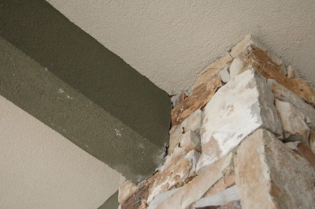

I Shot the Sheriff
Nestled up in the corner, hanging out on a stone pillar, with nice, hard, ricochet-friendly, Stucco on two other sides of him, a pesky, hole-in-house-pecking woodpecker had no idea that 'ol dead-eye Pedro was about to end its life with a copper BB. Originally, I approached from the south, and with the trusty Red Ryder BB Gun at the ready, I rounded the northern corner. Approaching aforementioned woodpecker with my weapon at the ready, I took aim, and shot. A flurry of activity on behalf of the bird told me that the speedy projectile had met its mark. Little did I know the purpose of that flurry.
Unaware of the pathetic power not packing behind the strength of the Red Ryder name, the BB only hit the target, but did not pass the outer feathers. Now angered by the pesky human who was encroaching upon the pleasant afternoon nap, the woodpecker aimed all of its aggression towards the toy-holding individual. Afraid and bewildered, I took cover in the safety of... nothing.
Screaming through the sky with the anger of an infant awoken from a nap, the woodpecker aimed directly for my eyes, and pecked with all its might. Feeling the blows that the Stucco recently had succumbed to, my right eye quickly fell victim to his beak. Obviously aware that half of my world had gone dark, I knew it was up to me to protect the other half. Despite the size difference, I would stand far less chance against this woodpecker if I couldn't see him. I landed a blow to his little body. Freed for the moment, I tried to scramble to safety, only to stumble down a set of stairs.
With ample time to gather his strength, the feathered fury came at me again. Nearly unconscious, my other eye stood no chance, and quickly the world entered a darkness beyond description. With the only vision left, my mind's eye showed me horrible scenes from The Birds, as this single creature undoubtedly had hundreds of friends already on the way.
If I had let my mind carry on with what it thought was going to happen, I would be fertilizer on your lawn. Thanks to the strength of that Red Ryder gun, that initial flurry of activity was only that woodpecker taking the last flight of its life, straight to the ground. Re-acquainting itself with the worm, and other various break-dancing moves, it came to a rest only to be disposed of in a trash can.
One shot, one kill. I shot the ~~sheriff~~ woodpecker, but I didn't shoot the deputy. I was just paranoid that I would miss and ricochet off into one of the windows less than 10 feet from my target OR that the BB would just bounce off of him, and he'd get that look in his eyes, like "YOU!" as he flew towards me. Thankfully neither of those things happened, and the house was relieved of the Stucco-unfriendly bird.
All in a day's work.
Updated 4/3/06
I've added some pictures so you can see the hangout spot, as well as the hole he already made in the ceiling.
- Prior: After-cereal Milk
- Next: Sharing Food